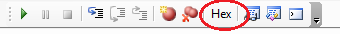

The locals watch window is used to examine the values of variables in the
test program. By default, the Locals Watch Window is not visible in the IDE.
To toggle the visibility of the Locals Watch Window, click Locals (Debug) from
the View menu. You may also click the Locals Watch Window icon
 in the Debug
toolbar to show the Locals Watch Window. When visible, it is docked in
front of the Properties Page.
in the Debug
toolbar to show the Locals Watch Window. When visible, it is docked in
front of the Properties Page.
The variables to be watched in the Locals Watch Window are automatically selected. The user has no control over which variables are watched here. All locally defined variables will automatically be placed in the Locals Watch Window. As soon as they go out of scope, they are removed.
When the test program is run in debug mode and breaks at a breakpoint, the variables in the Locals Watch Window will be shown with their current value and type, if available. If a variable has not yet been initialized, the value will be "Empty". When stepping through the code, the values in the Locals Watch Window will be updated as they are changed.
|  | Users can select the "HEX" mode if they wish to see integer values displayed as Hex. |
Example:
The following test program is in a break state in the first iteration of the For loop in function t2. The Locals Watch Window reflects the current value of 'cntr2', which is a locally defined variable. The variable 'cntr2', which refers to the return value of the function, is a local variable but is undefined at this point. The global variable 'GlobalVal' does not appear in the Locals Watch Window even though it is in scope because it is not locally defined.
 |
 |
See Also
Debugger Overview | Debugger Commands | Watch Window | Command Window
Astronics Test Systems
Last updated on March 7, 2011 by I. Williams